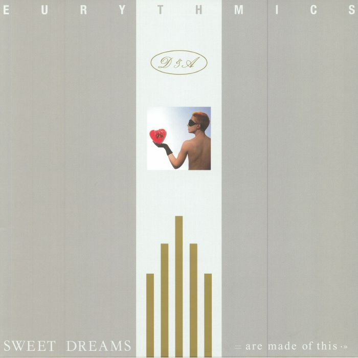

One of my favorite songs, Sweet Dreams (Are Made Of This) is a song written and performed by the British new wave music duo Eurythmics.
My favorite artists include...
Gorillaz
The Cure
Arcade Fire
Cage The Elephant
Years & Years
Glass Animals
David Bowie
Billie Eilish
alt-J
One of my favorite bands, Gorillaz, are a British virtual hip-hop band created in 1998 by musician Damon Albarn and artist Jamie Hewlett. The band primarily consists of four animated members: 2-D, Murdoc Niccals, Noodle, and Russel Hobbs.